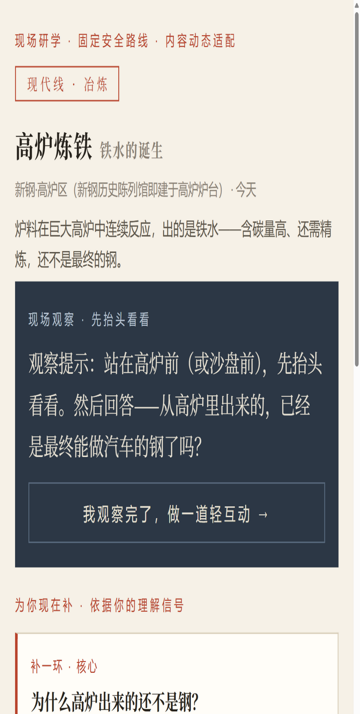
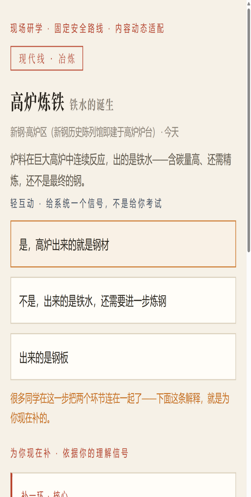
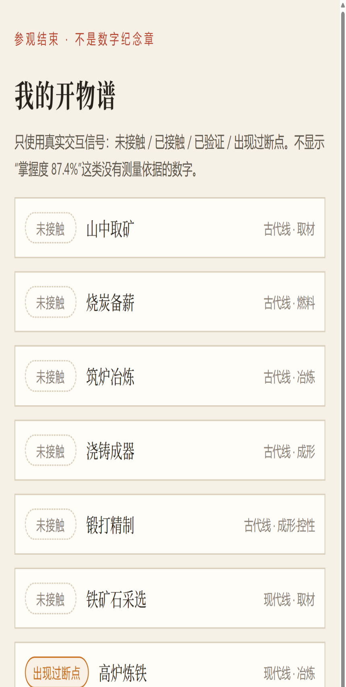

从《天工开物》到现代新余钢铁
开物脉络
一块铁，
近四百年
。
古
凤凰山 · 古代铁冶
炉型 · 木炭 · 鼓风 · 火候
拖 动 时 间 轴
今
新钢 · 现代钢铁
高炉 · 转炉 · 连铸 · 轧制
炉变了，
造物的问题仍在延续。
让工业研学从“看设备”，走向“懂工艺、知文化、见未来”——
面向工业研学的古今工艺认知导航系统 · 江西新余



系统实景 · 现场观察 → 补一环 → 我的开物谱
古今工艺可交互
工艺断点可感知
工业研学可衔接
参赛方向：数字智能 · 现场/观察/补一环/开物谱 均为真实运行系统界面
凤凰山古铁冶 · 《天工开物》 · 新余现代钢铁产业链